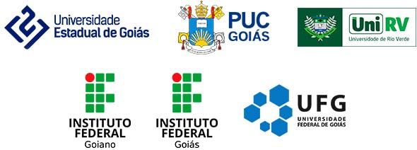

Universidade Federal de Goiás • UFG
Reitora
Angelita Pereira de Lima
Vice-Reitor
Jesiel Freitas Carvalho
Pro-Reitoria de Pós-Graduação
Laerte Guimarães Ferreira Júnior
Encontro Estadual de Didática e Práticas de Ensino • EDIPE
Organização
José Carlos Libâneo
Sandra Valéria Limonta Rosa
Adda Daniela Lima Figueiredo Echalar
Marilza Vanessa Rosa Suanno
Conselho Editorial CEPED
Profa. Dra. Adda Daniela Lima Figueiredo Echalar (UFG)
Profa. Dra. Akiko Santos (UFRRJ)
Profa. Dra. Ângela Imaculada Dalben (UFMG)
Prof. Dr. Bernhard Fichtner (Universidade de Siegen - Alemanha)
Profa. Dra. Celi Nelza Zulke Taffarel (UFBA)
Profa. Dra. Claudia Maria Lima (UNESP - Presidente Prudente)
Prof. Dr. Gilberto Lacerda Santos (UnB)
Profa. Dra. Hermínia Hernández Fernández (Universidad de La Habana/UH - Cuba)
Prof. Dr. José Carlos Libâneo (PUC Goiás)
Profa. Dra. Maria Amélia Santoro Franco (UNISANTOS)
Profa. Dra. Maria Guiomar Carneiro Tomazello (UNIMEP)
Profa. Dra. Marilza Vanessa Rosa Suanno (UFG)
Profa. Dra. Mirza Seabra Toschi (UEG)
Profa. Dra. Monique Andries Nogueira (UFRJ)
Profa. Dra. Sandra Valéria Limonta Rosa (UFG)
Prof. Dr. Saturnino de La Torre (Universitat de Barcelona/UB - Espanha)
Profa. Dra. Selma Garrido Pimenta (USP)
Profa. Dra. Vera Candau (PUC Rio de Janeiro)
Profa. Dra. Viviana González Maura (Universidad de La Habana/UH - Cuba)
Autores
Centro Integrado de Aprendizagem em Rede • CIAR
Direção
Marlília de Goyaz
Vice-Direção
Silvia Figueiredo
Coordenação Pedagógica e Gestão Moodle
Janice Lopes
Coordenação Tecnológica
Amilton Araújo
Coordenação de Comunicação
Raniê Solarevisky de Jesus
Coordenação de Publicação
Ana Bandeira
Coordenação de Publicação Multimídia
Wagner Bandeira
Coordenação de Publicação Audiovisual
Flávio Gomes
Suporte Técnico
Amilton Araújo
Desenvolvimento do e-book
Leandro Abreu
Diagramação
Victor Frazao
CEGRAF
Goiânia, 2022.
Dados Internacionais de Catalogação na Publicação (CIP) GPT/BC/UFG
| D555 |
Didática e formação de professores: embates com as políticas curriculares neoliberais [E-book] / organizadores, José Carlos Libâneo ... [et al.]. – Goiânia: Cegraf UFG, 2022. 200 p. : il. Modo de acesso: Wold Wide Web: https://publica.ciar.ufg.br/ebooks /edipe2_ebook/index.html ISBN (Ebook): 978-85-495-0500-2 Inclui bibliografia. 1. Educação. 2. Professores - Formação. 3. Ensino - Legislação - Brasil. 4. Ensino via web. 5. Planejamento educacional. I. Libâneo, José Carlos |
Bibliotecária responsável: Adriana P. Aguiar / CRB1: 3172
Este e-book foi desenvolvido pela Equipe de Publicação CIAR.
Todo o conteúdo deste material é de inteira responsabilidade de seus respectivos autores.
Os produtos dispostos aqui podem ser usados e compartilhados por terceiros, inclusive em sala de aula e pesquisas acadêmicas, desde que acompanhados dos créditos de seus autores. A distribuição é gratuita e o uso comercial proibido.